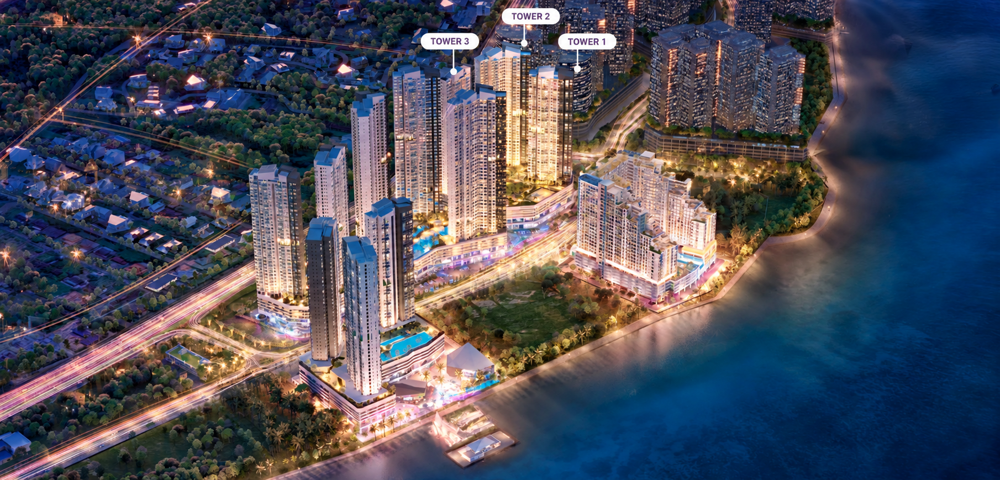
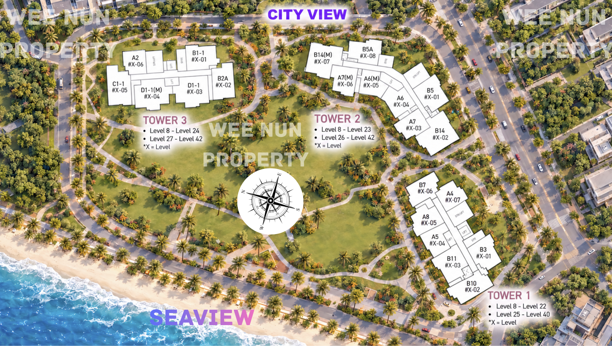

JOHOR BAHRU · FREEHOLD
把日常，
安放在海湾边。
新山海湾永久地契公寓
从一人生活，到一家人的从容空间。
月供 RM1,800 起
指定单位；月供为估算，以银行批准条件为准。整体发展效果图，含其他期数；仅供示意。
SEA VIEW / 海景实拍
看看海景什么样子先
按播放，感受窗外的海湾景色。
此视频为景观参考，不代表所有单位的视野；实际景观因楼栋、楼层及朝向而异。
01 / A PLACE TO CALL HOME
有城市的便利，
也留一点空间给生活。
沿着 Persiaran Abu Bakar Sultan，连接新山日常生活圈。从精巧的一房，到附书房的家庭户型，按你的生活方式，挑选合适的空间。
永久地契，自住长远规划
约 3.82 英亩本期用地，规划服务式公寓、商业空间与休闲设施层。
选择适合自己的格局
一房、两房、两房加书房，以及顶层复式单位可供了解。
02 / FIND YOUR SPACE
先选生活，再选户型。
保留 sqft 与 sq.m. 双单位
点击平面图，可放大查看。
Tower 1 · 2 · 3 位置与朝向
查看高清原图
位置与朝向示意；实际景观以具体单位、楼层及现场情况为准。
03 / CONNECTED TO THE CITY
生活配套，
就在周边。
购物、医疗与交通配套，
让你更容易安排每一天。
距离摘自项目资料，为估算值；实际路线及交通情况可能不同。
04 / GOOD TO KNOW
看房前，你可能想问。
目前价钱和优惠是多少？
一房全家私单位 RM416,000 起，月供 RM1,800 起。起价适用于指定单位，并非每个一房户型均为此价格。月供为估算，实际金额取决于贷款额、利率及年限，以银行批准条件为准。其他价格、回扣及家私配套会因户型、楼层、单位与购买条件而不同。点击 WhatsApp，告诉我你的预算与需求，我会提供对应单位的最新资料。
每个单位都看海吗？
景观会因楼栋、单位朝向、楼层及周边发展而不同。请联系查询具体单位的方向及景观；整体效果图不代表每个单位的实际视野。
“两房＋书房”是三房吗？
本页按项目资料标示为两间卧室加一间书房，并未将书房直接列为第三间卧室。可点击平面图查看空间安排。
怎样预约参观或查询交付时间？
点击下方 WhatsApp 联系 Wee Nun，告诉我你方便的日期、预算和房间需求。我会协助确认参观安排，并提供最新工程及预计交付资料。
LET’S FIND YOUR NEXT HOME
你的下一间家，
从一次聊天开始。
告诉我预算、房型与用途，我帮你筛选合适的单位。
WhatsApp 联系 Wee Nun